KOZHIKODE / KERALA, INDIA
Software engineer.
I build privacy-aware web apps and computer vision tools for reading historical handwriting.
Project gallery
VISUAL JOURNAL
A field of vision.
From a developer’s keyboard to GEC Thrissur and a centuries-old manuscript. Scroll through the photographs or select a frame.
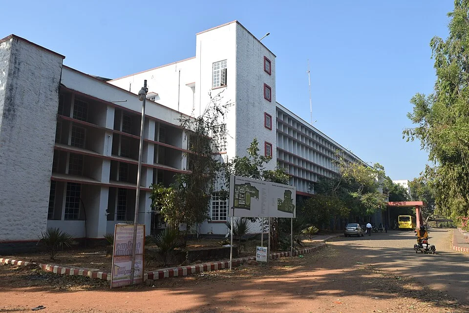
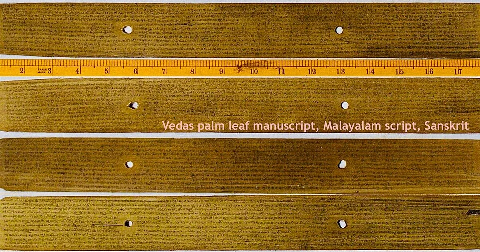
NOW SHOWING
New in motion.
PROJECT INDEX
Selected work.
Five projects across software, privacy engineering and applied AI. Each case has its own narrated walkthrough, source code and project brief.
Showing 5 of 5 projects.
Photo privacy
AssentTag
Checks who is uploading a photo and masks protected faces before the image is shared.
Masking decision
Who stays visible?
- Identity
- Compare with enrolled faces.
- Privacy
- Keep protected regions blurred.
Stack
- Python
- Django
- OpenCV
- Dlib
- MySQL
- Features
- Live identity checks and face-level masking.
- Next step
- Test missed faces and mask coverage on a representative, consented set of photos.
Manuscript research
EpigraphiX-AI
Restores degraded Malayalam palm-leaf images and extracts candidate glyphs for transcription.

Stack
- Python
- OpenCV
- NumPy
- Sauvola
- Segmentation
- Features
- Adaptive thresholding, component segmentation and Malayalam lexicon review.
- Next step
- Evaluate a trained recognizer on held-out manuscripts using character and word error rates.
One-time sharing
QuietNote
Lets one reader claim a note, even when two readers open the same link together.
Concurrent access
Two readers, one claim
- First successful claim
- Receives content
- Later claim
- Already consumed
Stack
- Next.js
- TypeScript
- Hono
- Prisma
- PostgreSQL
- Features
- Expiring shares, optional access keys and owner-controlled revocation.
- Next step
- Add retention controls and load-test concurrent claims.
Defensive source review
AegisForge-X
Connects a potential code issue to the source location, detection rule and evidence a reviewer needs.
Evidence record
What a reviewer gets
- Location
- File path + line
- Finding
- Matched language rule
- Integrity
- SHA-256 evidence digest
Stack
- Python
- Static analysis
- SHA-256
- Merkle trees
- Features
- Language-aware rules, source locations, SHA-256 evidence and PDF reports.
- Next step
- Measure false positives and missed findings by language and rule on labelled examples.
Ledger simulation
Deciphera
Explains one simulated Bitcoin off-chain event to three different readers.
Narrative engine
One event, three accounts
- ClientWhat changed
- AuditorState evidence
- TechnicalProtocol detail
Stack
- JavaScript
- HTML / CSS
- Bitcoin L2
- Taproot
- Features
- vUTXO transfers, covenant scenarios, script inspection and audience-specific narratives.
- Next step
- Compare each generated narrative with an explicitly defined expected transaction state.
No projects match your search.
PORTFOLIO FILMS
Screening room.
All five applications, their technology choices and proposed improvements.
Chapters & transcript
Read the narration
AssentTag starts with a group photo. OpenCV finds faces and Dlib compares them with enrolled identities. A face match still needs permission. The Django app blurs the face until it has consent. MySQL stores the records. Next, evaluate missed faces and masking failures on a representative, consented dataset.
On a palm leaf, faint writing can resemble grain. EpigraphiX-AI uses adaptive thresholds to separate the two. Python and OpenCV isolate connected marks as glyphs. A Malayalam lexicon helps review likely character sequences. Next, connect a trained recognition model and measure character and word errors on unseen manuscripts.
AegisForge-X makes a security finding traceable to the source. Python masks comments while preserving positions. Language rules flag potential issues, and hashes link evidence to the reviewed input for human inspection. Next, use labeled examples to measure false alarms and missed cases for each language and rule.
Deciphera is a browser simulator for Bitcoin transfers. JavaScript models an off-chain transaction, then turns the same event into three explanations: one for a client, one for an auditor, and one for a technical reader. Next, add tests that compare each narrative with an explicitly defined transaction state.
QuietNote tackles a race: two readers opening a one-time link together. Next.js and Hono handle the request. One conditional PostgreSQL update lets a single reader claim the note. Owners can also set expiry or revoke access. Next, add retention controls and test the counters under heavier traffic.
From school in Kerala to software internships and manuscript research. The education and internship chapters use campus photographs, company material and photographs of the work. Film credits ↗
Chapters & transcript
Read the narration
How does a developer get from biology classes in Kerala to reading the marks on a centuries-old palm leaf? For Adarsh, the journey began in school.
He completed high school at MGM in Engapuzha, then studied biology at Government Higher Secondary School in Thamarassery.
At the College of Applied Science in Thamarassery, he earned a computer science degree. Programming and databases became his foundation for building software.
His master's at Government Engineering College, Thrissur, brought those skills together. He applied computer vision to photo privacy and to reading handwritten manuscripts.
At Bluegen Solutions, he built Django endpoints for authenticated requests and designed linked MySQL tables. Debugging with the team taught him to trace an issue from request to database.
At The Skybrisk, he built React components for product catalogs, purchase orders, and invoices. He connected them to APIs, managed state with Redux Toolkit, and added PDF invoice exports.
His DevOps internship at CODTECH took him into software delivery. He automated builds and tests in GitHub Actions, configured Kubernetes deployments, and added baseline security scans.
His published paper asks how software can read inkless writing carved into damaged palm leaves. It describes checking the leaf's surface and using adaptive thresholding to separate faint grooves from the grain.
The paper explores transformer-based transcription. The public prototype uses geometric features and a Malayalam word list. A next step is to test a trained recognizer on held-out manuscripts and measure character errors.
Across these experiences, Adarsh learned to connect an interface, a database, an image pipeline, and a release process. He wants to bring those skills to a software engineering team.
FILM ARCHIVE
Earlier visual reels.
Five project artworks rotate into view to a pulsing synth and mallet score.
Piano and a flute melody follow a layered camera move from the Western Ghats to the Malabar coast.
The early portfolio’s titles and paper wipes, redrawn in 4K and timed to a new keyboard score.
A chrome sculpture turns to a shifting stereo drone and soft bells, re-rendered from the original 3D scene.
The project and journey films use a synthetic English voice. The four visual reels each have an instrumental score and a downloadable silent original. Project and landscape illustrations include AI-generated imagery.
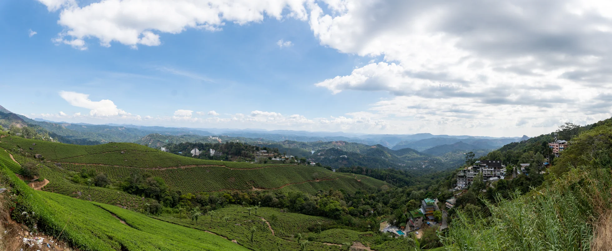
About me
Behind the work.
I’m Adarsh, a software engineer from Kozhikode, Kerala.
A group photo and a faded manuscript both made me ask what a computer should see. In AssentTag, I used face detection to protect people in shared photos. In EpigraphiX-AI, I worked on separating tiny handwritten strokes from the fibres of a palm leaf.
During my MCA at Government Engineering College, Thrissur, I also worked on Django APIs, React interfaces and automated software delivery. I graduated in 2026 and am looking for software engineering, full-stack and applied AI roles.
How do you read a letter scratched into a leaf when the fibres look like handwriting?
I investigated that problem with images of historical Malayalam and Grantha manuscripts. The research follows each mark from the surface of the leaf to a proposed transcription that a reader can inspect.
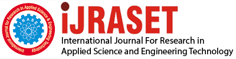
Adarsh S · IJRASET · August 2026
Publication details
EpigraphiX-AI: Neural Epigraphical OCR, Topological Binarization, Strict Manuscript Authentication, and Multi-Model Intelligence for Degraded Historical Palm-Leaf Manuscripts
Adarsh S · IJRASET · Volume 14, Issue VIII · August 2026
DOI 10.22214/ijraset.2026.84707
Inside the research
Recover the strokes
Leaf fibres and shallow incisions produce similar textures. I used directional filtering and local Sauvola thresholding to separate script from the background under uneven light.
Examine each glyph
Connected components group the marks into candidate characters. The public recognition prototype inspects their geometry and enclosed loops so a reader can trace a proposed character back to its shape.
Review the reading
Edit-distance alignment compares candidate strings with a Malayalam lexicon. The document studio brings the segmentation and transcription together for inspection and PDF export.
Experience
Internships.
I built the database and API at Bluegen, the interface at The Skybrisk, and the delivery pipeline at CODTECH.
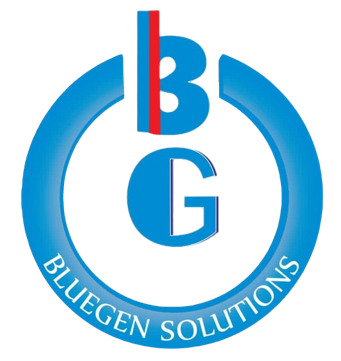
Dec 2025 – Mar 2026Kozhikode · On-site
Bluegen Solutions
Software Development Intern
Built authenticated Django endpoints and traced requests through linked MySQL tables.
Bluegen’s reception and a programming study. Film credits
Internship responsibilities
Kozhikode, Kerala · On-site
- Built authenticated REST endpoints in Python and Django so application requests could reach the right server-side business logic.
- Designed a normalized MySQL schema across more than eight tables. Foreign keys kept related records consistent, and indexes helped the application retrieve them faster.
- Profiled and debugged issues with the Agile engineering team, following failures from the API down to the database.
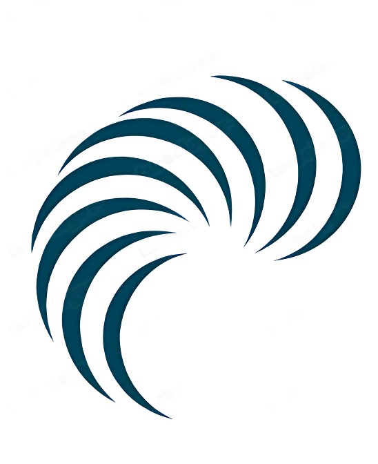
Feb – Mar 2026Remote
The Skybrisk
React.js Development Intern
Connected React screens for catalogues, orders and invoices, with PDF export for the final invoice.
Company website example and a keyboard study. Film credits
Internship responsibilities
Remote
- Built React screens for a product catalogue, purchase and sales orders, goods-received notes and invoicing. Redux Toolkit managed shared state across those ERP workflows.
- Created reusable Material UI components, connected them to REST APIs, and applied role-based route guards using JSON Web Tokens.
- Used Chart.js for interactive reporting and jsPDF for client-side invoice export, taking the same business data from a dashboard to a downloadable document.
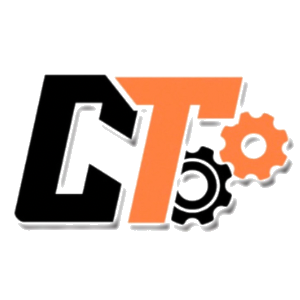
Feb – Mar 2026Remote
CODTECH IT Solutions
DevOps Intern
Automated builds and tests with GitHub Actions, then configured Kubernetes deployments and baseline security scans.
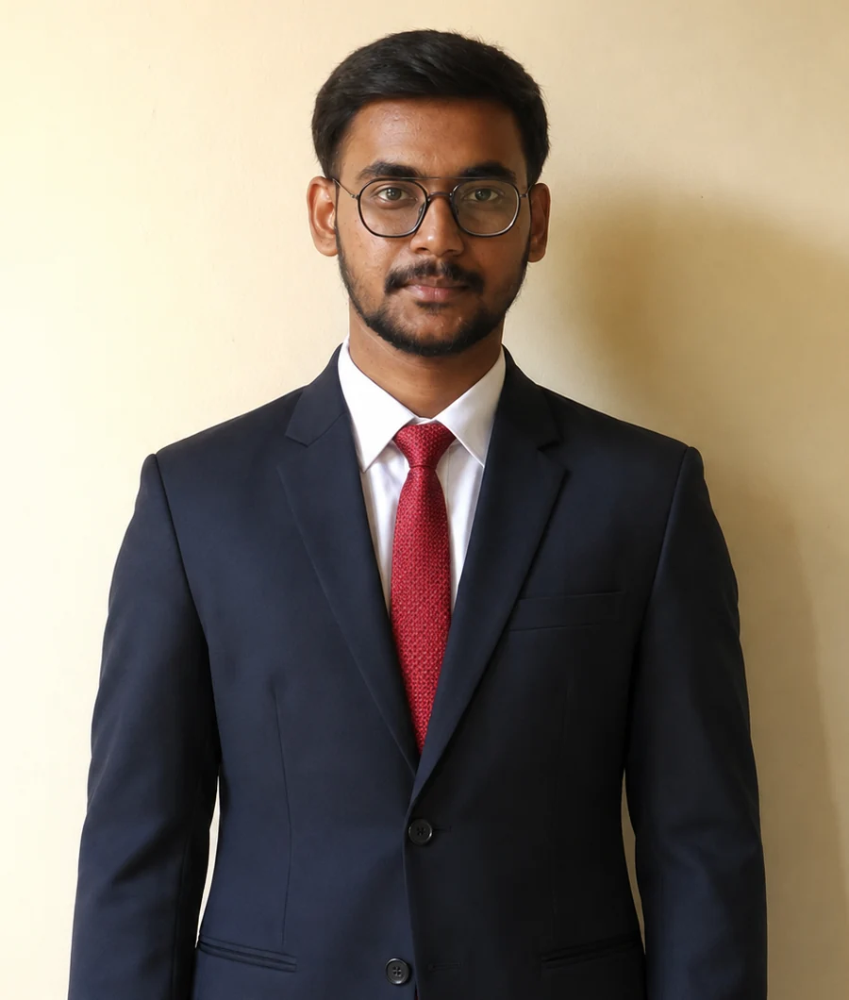
Gourav Boga · Full-stack developerCODTECH team directoryCompany founder portrait and a networking study. Film credits
Internship responsibilities
Remote
- Automated build and test stages with GitHub Actions so a source change could pass through the same delivery checks on every run.
- Wrote Kubernetes manifests for containerized services, configured three pod replicas and used a load balancer to distribute traffic.
- Integrated OWASP ZAP baseline scans into the pipeline to flag configuration issues alongside build and test results.
Skills
My toolkit.
Programming
- Python
- Java
- C
- JavaScript
- PHP
- SQL
- MATLAB
Web & applications
- HTML
- CSS
- React
- Django
- Flask
- Node.js
- REST APIs
- Laravel
- Flutter
AI & computer vision
- OpenCV
- Dlib
- PyTorch
- TensorFlow
- Keras
- CNN
- Scikit-learn
- OCR
Data & analytics
- NumPy
- SciPy
- Pandas
- Matplotlib
- Seaborn
- MySQL
- MongoDB
Delivery & tooling
- Git
- GitHub
- Docker
- CI/CD
- Linux
- Postman
- GitHub Actions
- Kubernetes
Security & systems
- Biometric verification
- OWASP
- SHA-256
- Merkle trees
- Blockchain
- IoT
Kerala · 2016–2026
Education.
I studied biology in Thamarassery, then computer science. At GEC Thrissur my postgraduate work focused on privacy and manuscript recognition.

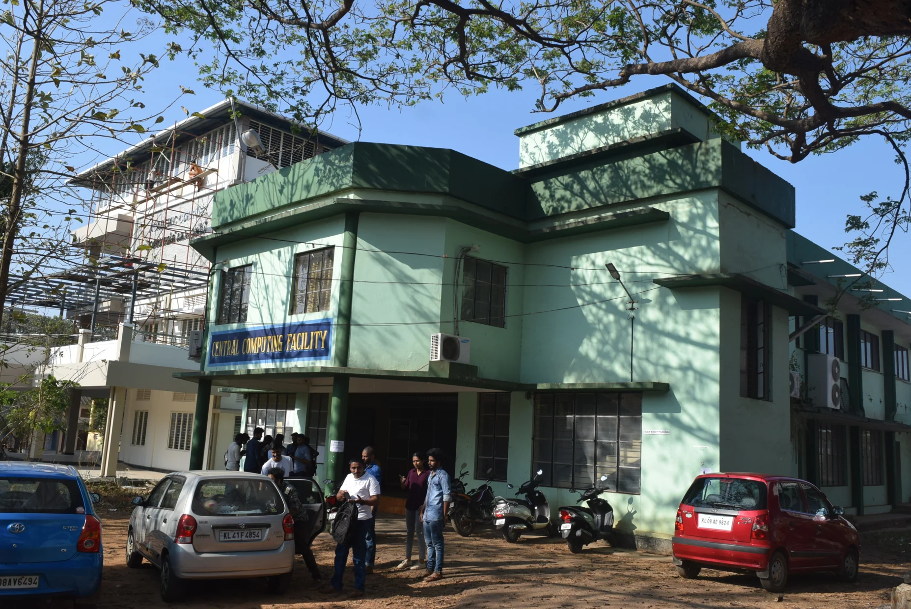
Central Computing Facility, Thrissur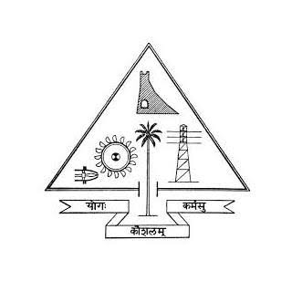
Master of Computer Applications
My postgraduate projects explored face-level privacy for shared photos in AssentTag and historical manuscript recognition in EpigraphiX-AI.
Main block and central computing facility at GEC Thrissur. Film credits
 Korangad campus · CAS
Korangad campus · CAS
During my final undergraduate year, I also completed a full-stack development credential in React and Drupal through Fireflies.
Open the full campus photographThamarassery town and a computer hardware study. Film credits
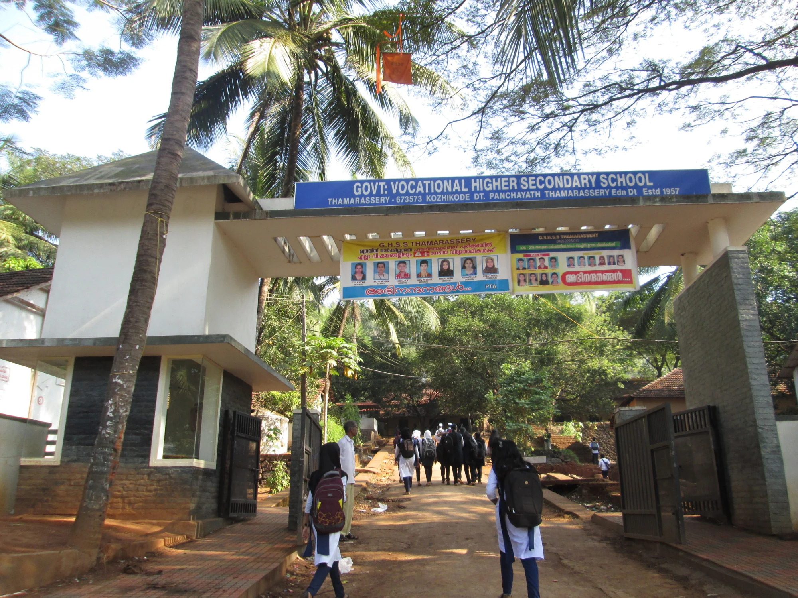
GVHSS entrance gateCompleted Kerala’s Class XII higher secondary qualification in the biology stream before moving into computer science at degree level.
School entrance and a biology study. Film credits
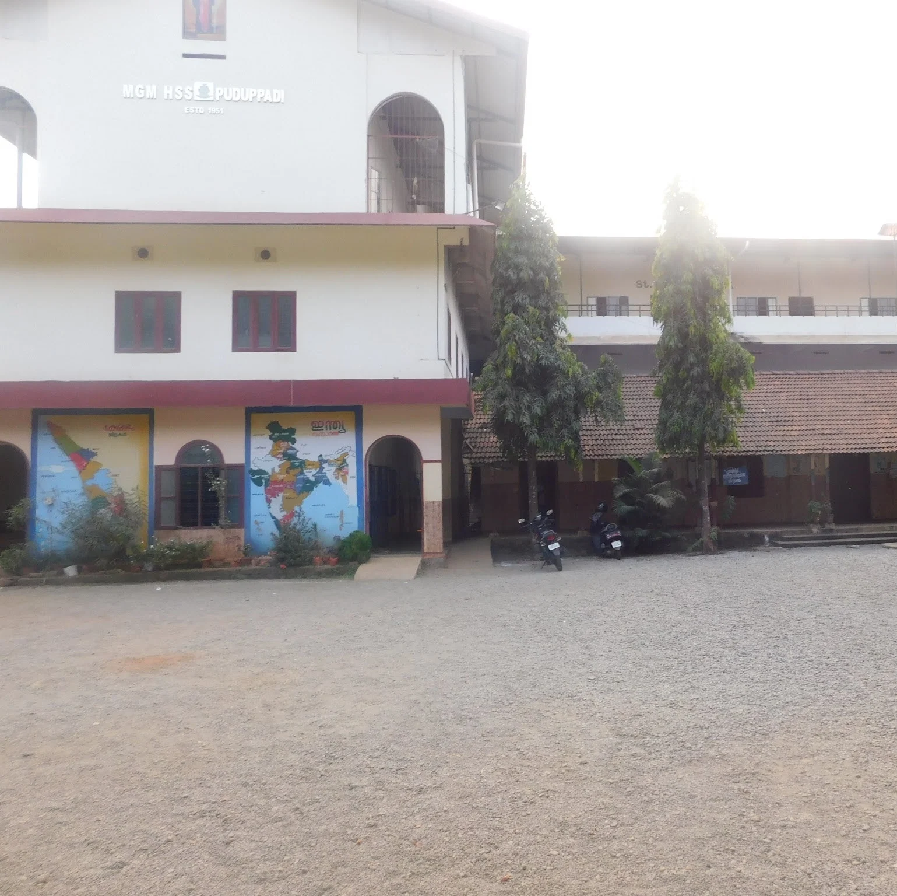
MGM school courtyardCompleted my Class X school qualification in Engapuzha before continuing to higher secondary studies in Thamarassery.
MGM school courtyard and Thamarassery Churam. Film credits
Continuous learning
Certifications.

AWS
CloudOps Engineer – Associate
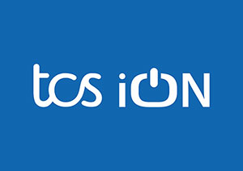
TCS iON
Career Edge – IT Primer

Cisco Networking Academy
Introduction to Modern AI
View 12 more credentials
Skill India Digital Hub
SOAR – AI to be Aware
Deloitte
Technology Job Simulation
Simplilearn
Microsoft Excel Advanced Analytics
Simplilearn
Deep Learning with Keras
Simplilearn
Google Gemini Certification

NPTEL, IIT
Programming in Java
HackerRank
SQL Basics

IBM
Data Analysis Using Python
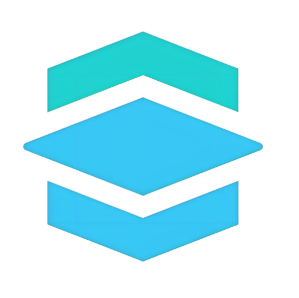
ScholarHat
MTA: Introduction to Programming Using Python
ScholarHat
C Programming
Simplilearn
Data Science
Fireflies
Full Stack Development with React and Drupal
Contact
Let’s talk.
Have a software engineering, full-stack or AI opportunity? I’d love to hear about it.